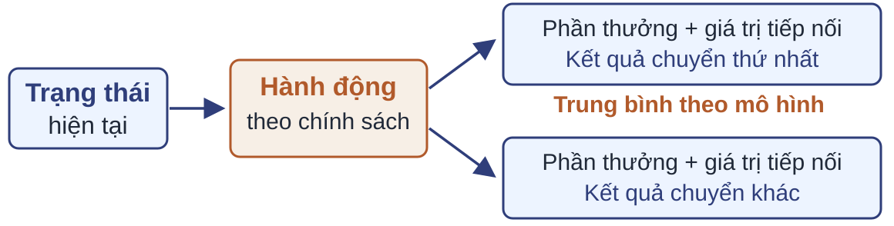
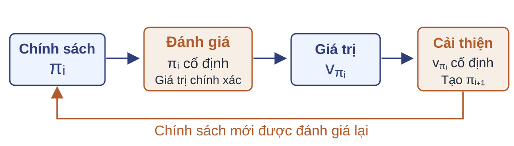
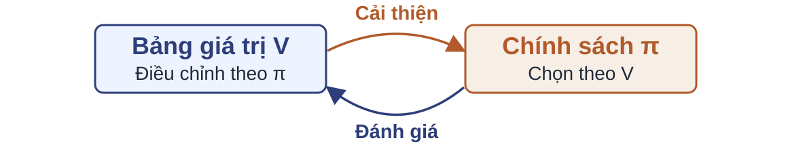
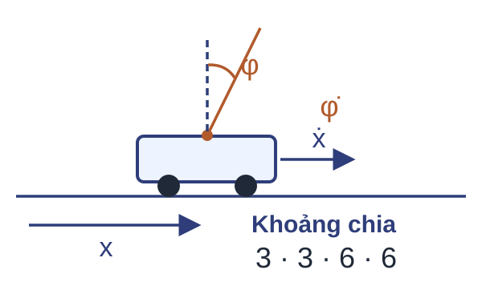

Giải MDP bằng quy hoạch động
Học tăng cường · Bài 04 · Năm học 2026–2027, học kỳ 1
Lập kế hoạch (planning) bằng quy hoạch động (dynamic programming)
trong quá trình quyết định Markov (Markov decision process, MDP)
Với MDP hữu hạn và $\gamma<1$, giá trị tối ưu là điểm bất động duy nhất của toán tử Bellman tối ưu.
Chính sách tham lam theo nó là tối ưu.
Trường Đại học Công nghệ, Đại học Quốc gia Hà Nội
Tiên quyết và quy ước
Nhắc lại: MDP hữu hạn có tính Markov, mô hình $p(s',r\mid s,a)$, lợi tức (return) $G_t=R_{t+1}+\gamma G_{t+1}$ (Bài 03).
Nhắc lại: chính sách Markov dừng (stationary policy) $\pi(a\mid s)$ chỉ phụ thuộc trạng thái hiện tại, không đổi theo $t$.
Nhắc lại: $v_\pi(s)=\mathbb E_\pi[G_t\mid S_t=s]$ thỏa phương trình Bellman kỳ vọng (Bài 03).
Tiên quyết và quy ước
Ký hiệu: $\mathcal S$ gồm $n$ trạng thái chưa kết thúc; $\mathcal A(s)$ hữu hạn; $V(s_{\mathrm{term}})=0$.
Ký hiệu: $P_\pi$ là ma trận chuyển, $r_\pi$ là phần thưởng kỳ vọng một bước, cả hai dưới $\pi$.
Ký hiệu: $\mathbb E_\pi$ theo $\pi$ và $p$; $0\le\gamma<1$; $t$, $k$, $i$ đếm bước tương tác, lượt quét, vòng cải thiện.
Mục tiêu học tập
- Tính lượt quét, giá trị chính xác và chặn sai số theo phần dư (Bài tập 04.1).
- Lập chính sách tham lam, kiểm giá trị không giảm (Bài tập 04.2).
- Chạy lặp chính sách; phân biệt chứng nhận tối ưu với dừng gần đúng (Bài tập 04.3).
- Chạy lặp giá trị, trích chính sách, chọn ngưỡng dừng (Bài tập 04.4).
- So sánh lịch cập nhật; nêu điều kiện bao phủ và điều kiện mô hình (Bài tập 04.5, 04.6).
Nội dung
- Mở đầu
- Đánh giá chính sách
- Cải thiện chính sách
- Lặp chính sách
- Lặp giá trị
- Lịch cập nhật và giới hạn của mô hình bảng
- Tổng kết và chuyển tiếp
Vấn đề trung tâm
Nhu cầu: từ $p$ đã biết, tìm chính sách tốt nhất tại mọi trạng thái, với $0\le\gamma<1$
- Lượt quét hội tụ về $v_\pi$
- Tham lam theo $v_\pi$ chính xác không kém $\pi$
- Đánh giá chính xác và phá hòa cho dừng hữu hạn tại chính sách ổn định
- $v_*$ là điểm bất động duy nhất của $T_*$; tham lam theo $v_*$ tối ưu
- Bất đồng bộ cần phủ mọi trạng thái vô hạn lần; chứng nhận chỉ thuộc MDP đã cho
Cấu trúc một phép cập nhật quy hoạch động
- Mục tiêu một bước $r+\gamma V(s')$ đọc từ bảng $V$, lấy kỳ vọng theo $p$.
- Gộp các hành động bằng trung bình theo $\pi$ hoặc bằng cực đại.
- Cập nhật theo lịch đồng bộ, tại chỗ hoặc bất đồng bộ (phần 6).
- Dừng theo phần dư, tức mức thay đổi sau một lượt quét, hoặc khi chính sách không đổi.
Ví dụ: mô hình hai trạng thái
| Trạng thái $s$ | Hành động | Kế tiếp $s'$ | Phần thưởng $r$ |
|---|
| $\mathrm s_0$ | $\mathrm a$ | $\mathrm s_0$ | $1$ |
| $\mathrm s_0$ | $\mathrm b$ | $\mathrm s_1$ | $0$ |
| $\mathrm s_1$ | $\mathrm a$ | $\mathrm s_0$ | $2$ |
| $\mathrm s_1$ | $\mathrm b$ | $\mathrm s_1$ | $3$ |
Mọi chuyển xác định; $\gamma=0{,}9$; chính sách đầu $\pi_0=(\mathrm a,\mathrm a)$ chọn $\mathrm a$ ở cả hai trạng thái.
Bài tập: lợi tức của chính sách ban đầu
Mô hình hai trạng thái, xuất phát tại $\mathrm s_1$ và theo $\pi_0=(\mathrm a,\mathrm a)$.
Câu hỏi: (a) Tính tổng chiết khấu của ba phần thưởng đầu.
(b) Nêu cột của bảng mô hình cần dùng ngoài cột phần thưởng.
Lời giải: $R_1=2$ rồi $R_2=R_3=1$ vì $\pi_0$ giữ tác tử tại $\mathrm s_0$
Tổng là $2+0{,}9\cdot1+0{,}81\cdot1=3{,}71$, chưa phải $G_0$
Cần cột trạng thái kế tiếp $s'$, tức mô hình $p$
2.Đánh giá chính sách
Muốn so sánh các hành động, trước hết phải tính giá trị của chính sách đang dùng từ mô hình.
Bài toán dự đoán · Toán tử Bellman đánh giá · Lượt quét đồng bộ · Phần dư Bellman
Giá trị dài hạn của chính sách cố định
Nhắc lại: $v_\pi$ là nghiệm của hệ $(I-\gamma P_\pi)v_\pi=r_\pi$; giải trực tiếp tốn $O(n^3)$ (Bài 03).
Nhu cầu: phép lặp rẻ hơn, vẫn dùng được khi thay trung bình bằng cực đại.
Trực quan. Thay đuôi $G_{t+1}$ bằng $V(S_{t+1})$ đọc từ bảng, lấy trung bình theo $\pi$ và $p$.

Tính $v_\pi$ là đánh giá chính sách (policy evaluation), còn gọi là dự đoán (prediction).
Ví dụ: mô hình hai trạng thái, hai lượt quét
Với $\pi_0=(\mathrm a,\mathrm a)$, $\gamma=0{,}9$ và $V_0=(0,0)$, tính hai lượt quét (sweep) đồng bộ.
$$\begin{aligned}V_{k+1}(\mathrm s_0)&=1+0{,}9\,V_k(\mathrm s_0)\\V_{k+1}(\mathrm s_1)&=2+0{,}9\,V_k(\mathrm s_0)\end{aligned}$$
| Lượt quét $k$ | $V_k(\mathrm s_0)$ | $V_k(\mathrm s_1)$ |
|---|
| $0$ | $0$ | $0$ |
| $1$ | $1$ | $2$ |
| $2$ | $1{,}9$ | $2{,}9$ |
Diễn giải: mọi ô của $V_{k+1}$ đọc cùng bảng $V_k$, nên $V_2(\mathrm s_1)=2+0{,}9\cdot1=2{,}9$.
Phương trình Bellman kỳ vọng
Nhắc lại: giá trị $v_\pi$ thỏa phương trình Bellman kỳ vọng
$$v_\pi(s)=\sum_a\pi(a\mid s)\sum_{s',r}p(s',r\mid s,a)\bigl[r+\gamma v_\pi(s')\bigr]$$
Với $\pi_0$ trên mô hình hai trạng thái, mỗi tổng còn một số hạng:
$$\begin{aligned}v_{\pi_0}(\mathrm s_0)&=1+0{,}9\,v_{\pi_0}(\mathrm s_0)\\v_{\pi_0}(\mathrm s_1)&=2+0{,}9\,v_{\pi_0}(\mathrm s_0)\end{aligned}$$
Mỗi lượt quét lấy vế phải, tính từ $V_k$, làm bảng $V_{k+1}$.
Toán tử Bellman đánh giá
Định nghĩa. Thay $v_\pi$ ở vế phải bằng bảng $V\in\mathbb R^n$ được toán tử Bellman (Bellman operator) $T_\pi$:
$$(T_\pi V)(s)=\sum_a\pi(a\mid s)\sum_{s',r}p(s',r\mid s,a)\bigl[r+\gamma V(s')\bigr]$$
Lượt quét đồng bộ là phép gán $V_{k+1}=T_\pi V_k$, mọi ô đọc cùng $V_k$ (Định nghĩa 04.1).
Phương trình Bellman kỳ vọng viết gọn thành $v_\pi=T_\pi v_\pi$, tức $v_\pi$ là điểm bất động của $T_\pi$.
Đại lượng $r+\gamma V(s')$ gọi là mục tiêu bootstrap (bootstrap target).
Tính co của toán tử đánh giá
Nhu cầu: biết $V_k$ có tiến tới $v_\pi$, đo bằng chuẩn vô cùng (sup norm) $\lVert U\rVert_\infty=\max_s\lvert U(s)\rvert$.
Trực quan. Lấy hiệu hai bảng, phần thưởng triệt tiêu; trung bình độ lệch không vượt độ lệch lớn nhất.
Ví dụ. $T_{\pi_0}(10,11)=(10,11)$, $T_{\pi_0}(0,0)=(1,2)$: độ lệch $11\to9$.
Mệnh đề. MDP hữu hạn, $0\le\gamma<1$, $\pi$ Markov dừng: $T_\pi$ là ánh xạ co (contraction) (Mệnh đề 04.4)
$$\lVert T_\pi U-T_\pi V\rVert_\infty\le\gamma\lVert U-V\rVert_\infty\quad\forall U,V\in\mathbb R^n$$
Hội tụ của đánh giá chính sách
Hệ quả. MDP hữu hạn, phần thưởng bị chặn, $0\le\gamma<1$, $\pi$ Markov dừng. Khi đó:
- $v_\pi$ là nghiệm duy nhất của $V=T_\pi V$ (Hệ quả 04.6);
- lượt quét từ mọi $V_0$ hội tụ về $v_\pi$:
$$\lVert V_k-v_\pi\rVert_\infty\le\gamma^k\lVert V_0-v_\pi\rVert_\infty$$
Chứng minh. Tính co của $T_\pi$ và định lý điểm bất động Banach trên $\mathbb R^n$.
Ví dụ: mô hình hai trạng thái, giá trị chính xác
Giải hệ Bellman của $\pi_0$, với $x=v_{\pi_0}(\mathrm s_0)$, $y=v_{\pi_0}(\mathrm s_1)$:
$$\begin{aligned}x&=1+0{,}9x&&\Rightarrow\ x=10\\y&=2+0{,}9x&&\Rightarrow\ y=11\end{aligned}$$
Bảng $(10,11)$ của ví dụ tính co là $v_{\pi_0}$: $T_{\pi_0}$ giữ nguyên nó.
Từ $V_0=(0,0)$, quy nạp cho $\lVert V_k-v_{\pi_0}\rVert_\infty=10\cdot0{,}9^k$ với $k\ge1$; sau hai lượt quét còn $8{,}1$.
Lưu ý: sai số đo được vì giải tay được hệ; khi $n$ lớn, $v_\pi$ chưa biết.
Phần dư Bellman
Nhu cầu: dừng các lượt quét bằng một đại lượng tính được từ bảng hiện có.
Định nghĩa. Phần dư Bellman (Bellman residual) của bảng $V$ đối với $T_\pi$ (Định nghĩa 04.7) là
$$\Delta_\pi(V)=\lVert T_\pi V-V\rVert_\infty$$
Ví dụ. $T_{\pi_0}(1,2)=(1{,}9;2{,}9)$ nên $\Delta_{\pi_0}(V_1)=0{,}9$; sai số thật của $V_1$ là $9$.
Lưu ý: phần dư khác sai số $\lVert V-v_\pi\rVert_\infty$.
Chặn sai số theo phần dư
Hệ quả. Với giả thiết của hệ quả hội tụ và mọi bảng $V$ (Hệ quả 04.8):
$$\lVert V-v_\pi\rVert_\infty\le\frac{\Delta_\pi(V)}{1-\gamma}$$
Ý nghĩa: với sai số cho phép $\kappa$, dừng khi $\Delta_\pi(V)\le\theta=(1-\gamma)\kappa$.
Chứng minh. $\lVert V-v_\pi\rVert_\infty\le\Delta_\pi(V)+\gamma\lVert V-v_\pi\rVert_\infty$, rồi chuyển vế.
Ví dụ. Với $V_1$, chặn là $0{,}9/0{,}1=9$, đúng bằng sai số thật.
Thuật toán đánh giá chính sách đồng bộ
Đầu vào: $p,\ \pi,\ \gamma<1,\ \theta=(1-\gamma)\kappa$, ngân sách $K$; khởi tạo $V\equiv0$, $k=0$.
Đầu ra: $V$, $\Delta_\pi(V)$ của chính bảng đó và nhãn dừng (Thuật toán 04.9).
- Giữ $V$ cố định, tính $W=T_\pi V$ và $\Delta=\lVert W-V\rVert_\infty$.
- Nếu $\Delta\le\theta$: trả $(V,\Delta)$, "đạt ngưỡng"; nếu không mà $k=K$: "hết ngân sách".
- Gán $V\leftarrow W$, $k\leftarrow k+1$, quay lại bước 1.
Ví dụ. $\pi_0$, $\kappa=0{,}1$: $\theta=0{,}01$, dừng ở $k=44$ vì $\Delta_{\pi_0}(V_k)=0{,}9^k$ với $k\ge1$.
Bài tập: lượt quét thứ ba và chặn sai số
Mô hình hai trạng thái, $\gamma=0{,}9$, $\pi_0=(\mathrm a,\mathrm a)$, $V_2=(1{,}9;2{,}9)$, $v_{\pi_0}=(10,11)$.
Câu hỏi: (a) Tính bảng đồng bộ $V_3=T_{\pi_0}V_2$.
(b) Tính $\Delta_{\pi_0}(V_2)$ và chặn sai số của $V_2$.
(c) So chặn với sai số thật; giải thích vì sao $V_3\ne v_{\pi_0}$.
Bài tập: lượt quét thứ ba và chặn sai số
Lời giải: (a) $V_3(\mathrm s_0)=1+0{,}9\cdot1{,}9=2{,}71$ và $V_3(\mathrm s_1)=2+0{,}9\cdot1{,}9=3{,}71$
(b) $V_3-V_2=(0{,}81;0{,}81)$ nên $\Delta_{\pi_0}(V_2)=0{,}81$; chặn $0{,}81/0{,}1=8{,}1$
(c) Sai số thật $\max\{10-1{,}9;\,11-2{,}9\}=8{,}1$, đúng bằng chặn
$\Delta_{\pi_0}(V_3)=0{,}9^3=0{,}729>0$ nên $V_3$ chưa thỏa $V=T_{\pi_0}V$
Kết luận: chặn đạt dấu bằng ở ví dụ này; chỉ $v_{\pi_0}$ có phần dư $0$.
3.Cải thiện chính sách
Muốn có chính sách tốt hơn, phải đổi hành động theo giá trị nhìn trước một bước.
Giá trị nhìn trước · Chính sách tham lam · Quy tắc phá hòa · Định lý cải thiện
Phép đổi hành động tại một trạng thái
Nhu cầu: với $v_{\pi_0}=(10,11)$, xác định có nên đổi $\pi_0=(\mathrm a,\mathrm a)$ tại $\mathrm s_1$.
Tại $\mathrm s_1$: $\mathrm a$ cho $2$ rồi sang $\mathrm s_0$; $\mathrm b$ cho $3$ và ở lại.
Trực quan. Thử mỗi hành động đúng một lần, rồi theo $\pi_0$.
Phần sau bước đầu có giá trị $v_{\pi_0}$ của trạng thái kế tiếp.
Bài toán đổi chính sách gọi là bài toán điều khiển (control).
Ví dụ: hai nhánh hành động
Tính giá trị nhìn trước của hai hành động tại $\mathrm s_1$, với $\gamma=0{,}9$.
| Nhánh | Thưởng | Tiếp nối | Nhìn trước |
|---|
| $\mathrm a$ | $2$ | $10$ | $2+0{,}9\cdot10=11$ |
| $\mathrm b$ | $3$ | $11$ | $3+0{,}9\cdot11=12{,}9$ |
Diễn giải: $12{,}9>11=v_{\pi_0}(\mathrm s_1)$, nên thử $\mathrm b$ một lần rồi theo $\pi_0$ có lợi hơn.
Giá trị nhìn trước một bước
Định nghĩa. Giá trị nhìn trước một bước (one-step lookahead) của $a$ tại $s$ tính từ bảng $V$ (Định nghĩa 04.11) là
$$Q_V(s,a)=\sum_{s',r}p(s',r\mid s,a)\bigl[r+\gamma V(s')\bigr]$$
Nhắc lại: $q_\pi(s,a)=\mathbb E_\pi[G_t\mid S_t=s,A_t=a]$ ấn định hành động đầu là $a$, rồi theo $\pi$.
Khi $V=v_\pi$, $Q_V$ là $q_\pi$; chẳng hạn $q_{\pi_0}(\mathrm s_1,\mathrm b)=12{,}9$.
Lưu ý: $(T_\pi V)(s)=\sum_a\pi(a\mid s)Q_V(s,a)$; riêng $Q_V$ không lấy trung bình theo hành động.
Chính sách tham lam
Định nghĩa. Chính sách xác định (deterministic policy) $\pi'$ là tham lam (greedy) theo $V$ nếu
$$\pi'(s)\in\arg\max_{a\in\mathcal A(s)}Q_V(s,a)\quad\forall s\in\mathcal S$$
Quy tắc phá hòa (tie-breaking): giữ $\pi(s)$ của chính sách cũ $\pi$ nếu nó đạt cực đại.
Nếu không, chọn phần tử đầu tiên theo một thứ tự cố định của $\mathcal A(s)$.
Ký hiệu: $\pi_V$ là chính sách tham lam theo $V$ chọn bằng quy tắc này (Định nghĩa 04.12).
Định lý cải thiện chính sách
Định lý. Giả thiết: MDP hữu hạn, phần thưởng bị chặn, $0\le\gamma<1$; $\pi$ Markov dừng, $v_\pi$ chính xác;
$\pi'$ Markov dừng, xác định và thỏa
$$q_\pi\bigl(s,\pi'(s)\bigr)\ge v_\pi(s)\quad\forall s\in\mathcal S$$
Kết luận: $v_{\pi'}\ge v_\pi$ tại mọi trạng thái, nghiêm ngặt tại nơi giả thiết nghiêm ngặt (Định lý 04.13).
Ý nghĩa: mọi chính sách tham lam theo $v_\pi$ đều thỏa giả thiết.
Chứng minh: định lý cải thiện chính sách
- Vì $\pi'$ xác định, $(T_{\pi'}v_\pi)(s)=q_\pi(s,\pi'(s))$; giả thiết thành $v_\pi\le T_{\pi'}v_\pi$.
- $T_{\pi'}$ đơn điệu: $U\le V$ kéo theo $T_{\pi'}U\le T_{\pi'}V$, vì $\pi'$, $p$, $\gamma$ không âm.
- Áp dụng bước 2 lặp lại cho bất đẳng thức của bước 1:
$$v_\pi\le T_{\pi'}v_\pi\le(T_{\pi'})^2v_\pi\le\cdots\le(T_{\pi'})^kv_\pi$$
- Theo hệ quả hội tụ, $(T_{\pi'})^kv_\pi\to v_{\pi'}$; bất đẳng thức giữ qua giới hạn.
Ví dụ: mô hình hai trạng thái, lần cải thiện thứ nhất
Tính chính sách tham lam theo $v_{\pi_0}=(10,11)$, rồi đánh giá lại.
| Trạng thái | $q_{\pi_0}(s,\mathrm a)$ | $q_{\pi_0}(s,\mathrm b)$ | Hành động mới |
|---|
| $\mathrm s_0$ | $1+0{,}9\cdot10=10$ | $0+0{,}9\cdot11=9{,}9$ | $\mathrm a$ |
| $\mathrm s_1$ | $2+0{,}9\cdot10=11$ | $3+0{,}9\cdot11=12{,}9$ | $\mathrm b$ |
Chính sách mới $\pi_1=(\mathrm a,\mathrm b)$; hệ $x=1+0{,}9x$, $y=3+0{,}9y$ cho $v_{\pi_1}=(10,30)$.
Diễn giải: $(10,30)\ge(10,11)$, nghiêm ngặt tại $\mathrm s_1$, đúng như định lý.
Bài tập: lần cải thiện thứ hai
Mô hình hai trạng thái, $\gamma=0{,}9$, $\pi_1=(\mathrm a,\mathrm b)$ có giá trị chính xác $v_{\pi_1}=(10,30)$.
Câu hỏi: (a) Tính $q_{\pi_1}(\mathrm s_0,\mathrm a)$ và $q_{\pi_1}(\mathrm s_0,\mathrm b)$.
(b) Xác định hành động tham lam tại $\mathrm s_0$ theo quy tắc phá hòa.
(c) Giải thích vì sao lựa chọn tại $\mathrm s_0$ khác lần cải thiện từ $\pi_0$.
Bài tập: lần cải thiện thứ hai
Lời giải: (a) $q_{\pi_1}(\mathrm s_0,\mathrm a)=1+0{,}9\cdot10=10$ và $q_{\pi_1}(\mathrm s_0,\mathrm b)=0+0{,}9\cdot30=27$
(b) $\mathrm a\notin\arg\max=\{\mathrm b\}$, nên chính sách tham lam chọn $\mathrm b$ tại $\mathrm s_0$
(c) Phần thưởng tại $\mathrm s_0$ không đổi; giá trị tiếp nối của $\mathrm s_1$ tăng từ $11$ lên $30$
Do đó nhánh $\mathrm b$ tăng từ $9{,}9$ lên $27$ và vượt nhánh $\mathrm a$
Kết luận: chính sách mới là $(\mathrm b,\mathrm b)$, vì tại $\mathrm s_1$ vẫn có $30>11$.
4.Lặp chính sách
Muốn tìm chính sách tối ưu, phải xen kẽ đánh giá chính xác với cải thiện tới khi ổn định.
Chính sách ổn định · Giá trị tối ưu · Phương trình Bellman tối ưu · Dừng hữu hạn
Đánh giá lại sau mỗi lần cải thiện
Nhu cầu: biết lặp đánh giá–cải thiện dừng khi nào, và chính sách lúc dừng có tối ưu không.
Trực quan. Đánh giá giữ chính sách cố định; cải thiện giữ giá trị cố định.

Xen kẽ hai bước gọi là lặp chính sách (policy iteration); $i$ đếm vòng.
Ví dụ: mô hình hai trạng thái, ba vòng lặp chính sách
Từ $\pi_0=(\mathrm a,\mathrm a)$: đánh giá chính xác, rồi cải thiện với thứ tự $\mathrm a$ trước $\mathrm b$.
| Vòng $i$ | Chính sách $\pi_i$ | Giá trị $v_{\pi_i}$ | Sau cải thiện |
|---|
| $0$ | $(\mathrm a,\mathrm a)$ | $(10,11)$ | $(\mathrm a,\mathrm b)$ |
| $1$ | $(\mathrm a,\mathrm b)$ | $(10,30)$ | $(\mathrm b,\mathrm b)$ |
| $2$ | $(\mathrm b,\mathrm b)$ | $(27,30)$ | $(\mathrm b,\mathrm b)$ |
Vòng $i=2$: hệ $x=0{,}9y$, $y=3+0{,}9y$ cho $v_{\pi_2}=(27,30)$.
Diễn giải: cải thiện ở vòng $2$ trả lại $(\mathrm b,\mathrm b)$, nên thuật toán dừng.
Chính sách ổn định
Định nghĩa. Chính sách xác định $\pi$ là ổn định nếu cải thiện tham lam theo $v_\pi$ trả lại $\pi$:
$$\pi(s)\in\arg\max_{a}q_\pi(s,a)\quad\forall s\in\mathcal S$$
Ví dụ. Với $v_{\pi_2}=(27,30)$:
$$\begin{aligned}q_{\pi_2}(\mathrm s_0,\mathrm a)&=1+0{,}9\cdot27=25{,}3,&q_{\pi_2}(\mathrm s_0,\mathrm b)&=0+0{,}9\cdot30=27\\q_{\pi_2}(\mathrm s_1,\mathrm a)&=2+0{,}9\cdot27=26{,}3,&q_{\pi_2}(\mathrm s_1,\mathrm b)&=3+0{,}9\cdot30=30\end{aligned}$$
Hành động $\mathrm b$ đạt cực đại ở cả hai trạng thái, nên $\pi_2$ ổn định (Định nghĩa 04.16).
Thuật toán lặp chính sách
Đầu vào: $p$, $\gamma<1$, $\pi_0$ xác định, ngân sách $I_{\max}$; khởi tạo $\pi=\pi_0$, $i=0$.
Đầu ra: $(\pi,v_\pi)$ và nhãn dừng (Thuật toán 04.17).
- Đánh giá chính xác: giải $(I-\gamma P_\pi)v=r_\pi$, được $v_\pi$.
- Lấy $\pi'$ tham lam theo $v_\pi$ với quy tắc phá hòa.
- Nếu $\pi'=\pi$: trả $(\pi,v_\pi)$, nhãn "ổn định".
- Gán $i\leftarrow i+1$; nếu $i=I_{\max}$: trả $(\pi,v_\pi)$, "chưa chứng nhận"; nếu không, $\pi\leftarrow\pi'$, về bước 1.
Dừng hữu hạn của lặp chính sách
Mệnh đề. Giả thiết: MDP hữu hạn, $\gamma<1$, đánh giá chính xác, phá hòa, $I_{\max}$ đủ lớn.
Kết luận: dừng sau tối đa $\prod_s\lvert\mathcal A(s)\rvert$ vòng tại chính sách ổn định (Mệnh đề 04.18).
Chứng minh. Mỗi lần đổi, giá trị không giảm và tăng nghiêm ngặt ở ít nhất một trạng thái.
Do đó dãy không lặp lại; số chính sách xác định hữu hạn nên thuật toán dừng.
Giá trị tối ưu
Nhu cầu: so $(27,30)$ với mọi chính sách, kể cả ngẫu nhiên và nhớ lịch sử.
Nhắc lại: chính sách nhớ lịch sử chọn $A_t$ theo $H_t=(S_0,A_0,R_1,\dots,S_t)$ (Bài 02).
Bốn chính sách xác định: $v_{\mathrm{aa}}=(10,11),\ v_{\mathrm{ab}}=(10,30),\ v_{\mathrm{ba}}\approx(9{,}47;10{,}53),\ v_{\mathrm{bb}}=(27,30)$.
Định nghĩa. Với $v_\pi(s)=\mathbb E_\pi[G_0\mid S_0=s]$, giá trị tối ưu là $v_*(s)=\sup_\pi v_\pi(s)$ trên mọi chính sách.
Chính sách $\pi_*$ là tối ưu nếu $v_{\pi_*}=v_*$ tại mọi trạng thái (Định nghĩa 04.19).
Phương trình Bellman tối ưu
Định lý. MDP hữu hạn, phần thưởng bị chặn, $\gamma<1$; $\pi$ xác định, ổn định. Khi đó
$$v_\pi(s)=\max_{a}\sum_{s',r}p(s',r\mid s,a)\bigl[r+\gamma v_\pi(s')\bigr]$$
và $v_{\pi'}\le v_\pi$ với mọi $\pi'$ Markov dừng (Định lý 04.20).
Ý nghĩa: không còn cách lệch một bước nào có lợi.
Lưu ý: so với chính sách nhớ lịch sử cần tính Markov (định lý tồn tại).
Bài tập: kết luận dừng từ bảng gần đúng
Mô hình hai trạng thái: $\mathrm s_0\xrightarrow{\mathrm a/1}\mathrm s_0$, $\mathrm s_0\xrightarrow{\mathrm b/0}\mathrm s_1$, $\mathrm s_1\xrightarrow{\mathrm a/2}\mathrm s_0$, $\mathrm s_1\xrightarrow{\mathrm b/3}\mathrm s_1$; $\gamma=0{,}9$.
Một chương trình giữ $\pi=(\mathrm a,\mathrm b)$ và bảng gần đúng $V=(0,0)$ thay cho $v_\pi$.
Câu hỏi: (a) Tính bốn giá trị nhìn trước $Q_V(s,a)$.
(b) Xác định chính sách tham lam theo $V$ với quy tắc phá hòa.
(c) Đánh giá kết luận "chính sách không đổi nên đã tối ưu".
Bài tập: kết luận dừng từ bảng gần đúng
Lời giải: (a) $Q_V(\mathrm s_0,\mathrm a)=1$, $Q_V(\mathrm s_0,\mathrm b)=0$, $Q_V(\mathrm s_1,\mathrm a)=2$, $Q_V(\mathrm s_1,\mathrm b)=3$
(b) Tham lam theo $V$ là $(\mathrm a,\mathrm b)$, trùng $\pi$
(c) Tính ổn định phải kiểm bằng $v_{(\mathrm a,\mathrm b)}=(10,30)$, không bằng $V$
Từ $(10,30)$, $q(\mathrm s_0,\mathrm b)=27>10$, nên $\pi$ không ổn định; $(\mathrm b,\mathrm b)$ đạt $(27,30)$
Kết luận: phép chọn đúng với bảng $V$; lỗi nằm ở bảng không phải giá trị của $\pi$.
5.Lặp giá trị
Muốn bỏ đánh giá đầy đủ, phải gộp cải thiện với một lượt quét thành phép cực đại.
Toán tử Bellman tối ưu · Tồn tại chính sách tối ưu · Ngưỡng phần dư
Chi phí của đánh giá đầy đủ
Nhu cầu: mỗi vòng lặp chính sách cần $v_\pi$ chính xác trước khi cải thiện.
Lượt quét cho $\pi_0$ với $\theta=0{,}01$ dừng sau $44$ lượt, vì $0{,}9^{44}\approx0{,}0097$.
Giải hệ tuyến tính đặc tốn $O(n^3)$ phép tính ở mỗi vòng.
Từ $V_1=(1,2)$, tham lam đã cho $(\mathrm a,\mathrm b)$: $1{,}9>1{,}8$ tại $\mathrm s_0$, $4{,}8>2{,}9$ tại $\mathrm s_1$.
Ý tưởng lặp giá trị
Trực quan. Cắt bước đánh giá còn đúng một lượt quét.
Tại mỗi trạng thái, lấy giá trị nhìn trước lớn nhất từ bảng hiện có làm giá trị mới.
Chọn tham lam và đánh giá một lượt quét gộp thành một phép cực đại.
Phép lặp này gọi là lặp giá trị (value iteration).
Ví dụ: mô hình hai trạng thái, hai lượt quét lặp giá trị
Từ $V_0=(0,0)$: $V_1=(\max\{1;0\},\ \max\{2;3\})=(1,3)$. Tính $V_2$.
| Trạng thái | Nhánh $\mathrm a$ | Nhánh $\mathrm b$ | Cực đại |
|---|
| $\mathrm s_0$ | $1+0{,}9\cdot1=1{,}9$ | $0+0{,}9\cdot3=2{,}7$ | $2{,}7$ |
| $\mathrm s_1$ | $2+0{,}9\cdot1=2{,}9$ | $3+0{,}9\cdot3=5{,}7$ | $5{,}7$ |
$V_2=(2{,}7;\ 5{,}7)$
Diễn giải: đánh giá $\pi_0$ cho $(1,2)$, lặp giá trị cho $(1,3)$ vì cực đại chọn $\mathrm b$ tại $\mathrm s_1$.
Toán tử Bellman tối ưu
Định nghĩa. Toán tử Bellman tối ưu (Bellman optimality operator) $T_*$ biến bảng $V$ thành
$$(T_*V)(s)=\max_{a\in\mathcal A(s)}Q_V(s,a)$$
Lặp giá trị là dãy $V_{k+1}=T_*V_k$; phần dư tối ưu là $\Delta_*(V)=\lVert T_*V-V\rVert_\infty$ (Định nghĩa 04.22).
Phương trình Bellman tối ưu viết gọn thành $V=T_*V$.
Lưu ý: $Q_V$ là $q_\pi$ chỉ khi $V=v_\pi$; bảng $V_1=(1,3)$ không là giá trị của chính sách xác định nào.
Tính co của toán tử tối ưu
Mệnh đề. MDP hữu hạn, $0\le\gamma<1$, mỗi $\mathcal A(s)$ hữu hạn. Với mọi $U,V\in\mathbb R^n$:
$$\lVert T_*U-T_*V\rVert_\infty\le\gamma\lVert U-V\rVert_\infty$$
Chứng minh. Với mỗi $a$, $\lvert Q_U(s,a)-Q_V(s,a)\rvert\le\gamma\lVert U-V\rVert_\infty$; cực đại không làm tăng chênh lệch.
Ví dụ. $T_*(10,11)=(10;12{,}9)$, $T_*(0,0)=(1,3)$: khoảng cách $9{,}9=0{,}9\cdot11$ (Mệnh đề 04.24).
Tồn tại chính sách tối ưu
Định lý. MDP hữu hạn có tính Markov, phần thưởng bị chặn, $0\le\gamma<1$. Khi đó:
- điểm bất động duy nhất của $T_*$ là $v_*$ (Định lý 04.25);
- tham lam theo $v_*$ tối ưu trên mọi chính sách.
Hệ quả. Chính sách ổn định, như $(\mathrm b,\mathrm b)$, tối ưu trên mọi chính sách.
Dạng khác: $q_*(s,a)=Q_{v_*}(s,a)=\sum_{s',r}p(s',r\mid s,a)\bigl[r+\gamma\max_{a'}q_*(s',a')\bigr]$, với $v_*(s)=\max_aq_*(s,a)$.
Ví dụ. $q_*(\mathrm s_0,\mathrm b)=0+0{,}9\cdot30=27$, $q_*(\mathrm s_0,\mathrm a)=25{,}3$.
Chứng minh: tồn tại chính sách tối ưu
- $T_*$ là ánh xạ co, nên có đúng một điểm bất động $\bar V$ (định lý Banach).
- Chính sách $\bar\pi$ tham lam theo $\bar V$ thỏa $T_{\bar\pi}\bar V=T_*\bar V=\bar V$, nên $\bar V=v_{\bar\pi}\le v_*$.
- Với $\pi$ bất kỳ, tính Markov cho $\mathbb E_\pi[R_{t+1}+\gamma\bar V(S_{t+1})\mid H_t]\le\bar V(S_t)$.
- Cộng dồn theo $t$ rồi qua giới hạn: $v_\pi\le\bar V$ với mọi $\pi$, nên $v_*\le\bar V$.
Kết luận: $\bar V=v_*$ và $\bar\pi$ đạt $v_*$.
Hội tụ của lặp giá trị
Hệ quả. Với giả thiết của định lý tồn tại và mọi $V_0$, lặp giá trị thỏa (Hệ quả 04.26)
$$\lVert V_k-v_*\rVert_\infty\le\gamma^k\lVert V_0-v_*\rVert_\infty$$
Ví dụ. Từ $V_0=(0,0)$: chặn $30\cdot0{,}9^k$ trùng sai số thật; $k=55$ là lượt đầu có sai số không quá $0{,}1$.
Lưu ý: chặn chứa $v_*$ chưa biết.
Chặn sai số theo phần dư tối ưu
Hệ quả. Với giả thiết trên và mọi bảng $V$:
$$\lVert V-v_*\rVert_\infty\le\frac{\Delta_*(V)}{1-\gamma}$$
Ý nghĩa: dừng khi $\Delta_*(V)\le\theta=(1-\gamma)\kappa$ thì sai số không quá $\kappa$ (Hệ quả 04.27).
Ví dụ. $T_*V_1=(2{,}7;5{,}7)$ nên $\Delta_*(V_1)=2{,}7$, chặn $27$, đúng bằng sai số thật.
Với $\kappa=0{,}1$: $\theta=0{,}01$; bảng $V_{55}$ có phần dư khoảng $0{,}0091$.
Thuật toán lặp giá trị đồng bộ
Đầu vào: $p$, $\gamma<1$, ngưỡng $\theta=(1-\gamma)\kappa$, ngân sách $K$, thứ tự phá hòa.
Đầu ra: $V$, $\pi_V$, $\Delta_*(V)$ của cùng bảng $V$ và nhãn dừng (Thuật toán 04.28).
- Khởi tạo $V=0$, $V(s_{\mathrm{term}})=0$, $k=0$.
- Giữ $V$ cố định; tính $Q_V$, $W(s)=\max_aQ_V(s,a)$, $\pi_V$ và $\Delta=\lVert W-V\rVert_\infty$.
- Nếu $\Delta\le\theta$: trả $(V,\pi_V,\Delta)$, "đạt ngưỡng"; nếu không mà $k=K$: "hết ngân sách".
- Gán $V\leftarrow W$, $k\leftarrow k+1$, quay lại bước 2.
Ví dụ: dãy năm ô
Ví dụ có trạng thái kết thúc: kiểm quy ước $V(s_{\mathrm{term}})=0$ và cách phần thưởng lan qua các ô.
- Ô $\mathrm c_1,\dots,\mathrm c_5$; $\mathrm c_5$ là trạng thái kết thúc.
- Hành động $\mathrm{trai}$, $\mathrm{phai}$ chuyển xác định sang ô bên cạnh; $\mathrm{trai}$ tại $\mathrm c_1$ giữ nguyên ô.
- Phần thưởng $10$ cho chuyển $\mathrm c_4\to\mathrm c_5$, $-1$ cho mọi chuyển khác; $\gamma=0{,}9$.
- Tính lặp giá trị từ $V_0=0$.
Ví dụ: dãy năm ô, bốn lượt quét
| Lượt quét $k$ | $\mathrm c_1$ | $\mathrm c_2$ | $\mathrm c_3$ | $\mathrm c_4$ | $\mathrm c_5$ |
|---|
| $1$ | $-1$ | $-1$ | $-1$ | $10$ | $0$ |
| $2$ | $-1{,}9$ | $-1{,}9$ | $8$ | $10$ | $0$ |
| $3$ | $-2{,}71$ | $6{,}2$ | $8$ | $10$ | $0$ |
| $4$ | $4{,}58$ | $6{,}2$ | $8$ | $10$ | $0$ |
Diễn giải: mỗi lượt quét đưa ảnh hưởng của phần thưởng $10$ lùi thêm một ô.
Ví dụ: dãy năm ô trơn trượt
Nhu cầu: kỳ vọng theo $p$ khi một hành động có ba kết quả chuyển.
Như dãy năm ô, nhưng đi đúng hướng với xác suất $0{,}8$, đứng yên $0{,}1$, ngược hướng $0{,}1$.
Vào $\mathrm c_5$ nhận $10$, kể cả do trượt. Tính $V_1(\mathrm c_4)$ từ $V_0=0$.
$$\begin{aligned}\mathrm{phai}&:\ 0{,}8\cdot10+0{,}1(-1)+0{,}1(-1)=7{,}8\\\mathrm{trai}&:\ 0{,}8(-1)+0{,}1(-1)+0{,}1\cdot10=0{,}1\end{aligned}$$
Diễn giải: mỗi nhánh là trung bình theo ba kết quả chuyển; $V_1(\mathrm c_4)=7{,}8$.
Bài tập: điểm bất động trên dãy năm ô
Dãy năm ô (không trơn trượt), $\gamma=0{,}9$, bảng $V_4=(4{,}58;6{,}2;8;10;0)$.
Câu hỏi: (a) Tính hai giá trị nhìn trước tại mỗi ô chưa kết thúc và $T_*V_4$.
(b) Xác định $\Delta_*(V_4)$ và chính sách tham lam theo $V_4$.
(c) Giải thích vì sao $V_4(\mathrm c_5)=0$ dù chuyển vào $\mathrm c_5$ nhận $10$.
Bài tập: điểm bất động trên dãy năm ô
Lời giải: (a) Cực đại của nhánh $\mathrm{trai}$ và nhánh $\mathrm{phai}$ tại từng ô:
$$\begin{aligned}\mathrm c_1&:\ \max\{3{,}122;\ 4{,}58\}=4{,}58,&\mathrm c_2&:\ \max\{3{,}122;\ 6{,}2\}=6{,}2\\\mathrm c_3&:\ \max\{4{,}58;\ 8\}=8,&\mathrm c_4&:\ \max\{6{,}2;\ 10\}=10\end{aligned}$$
(b) $T_*V_4=V_4$ nên $\Delta_*(V_4)=0$; tham lam đi phải tại $\mathrm c_1,\dots,\mathrm c_4$
(c) Phần thưởng $10$ thuộc chuyển $\mathrm c_4\to\mathrm c_5$; sau đó lượt kết thúc
Kết luận: theo chặn phần dư, $V_4=v_*$ và đi phải là chính sách tối ưu.
6.Lịch cập nhật và giới hạn của mô hình bảng
Muốn áp dụng quy hoạch động cho bài toán lớn, phải chọn lịch phủ mọi trạng thái và kiểm điều kiện mô hình.
Cập nhật tại chỗ · Lịch bất đồng bộ · Lặp chính sách tổng quát · CartPole rời rạc hóa
Chi phí một lượt quét
Nhu cầu: đếm chi phí một lượt quét khi $n$ lớn.
Ký hiệu: tối đa $m$ hành động và $d$ trạng thái kế tiếp cho mỗi cặp $(s,a)$.
| Lưu mô hình | Một lượt quét | Bộ nhớ mô hình |
|---|
| Đặc | $O(n^2m)$ | $O(n^2m)$ |
| Thưa | $O(nmd)$ | $O(nmd)$ |
Ví dụ. CartPole rời rạc hóa (cuối phần), $n=324$, $m=2$, $d\le12$: đặc $210\,600$, thưa $\le7\,776$ số hạng (Nhận xét 04.30).
Ví dụ: cập nhật tại chỗ
Nhu cầu: giảm số lượt quét bằng cách dùng ngay giá trị vừa tính.
Cập nhật tại chỗ (in-place) ghi đè từng ô; ô sau đọc ngay giá trị mới.
Mô hình hai trạng thái, đánh giá $\pi_0$, thứ tự $\mathrm s_0,\mathrm s_1$: được $(1;2{,}9)$ thay cho $(1,2)$.
Dãy năm ô, lặp giá trị, thứ tự $\mathrm c_4,\dots,\mathrm c_1$: một lượt quét cho $V_4$.
Thuật toán lặp giá trị bất đồng bộ
Quy hoạch động bất đồng bộ (asynchronous dynamic programming) tổng quát hóa cập nhật tại chỗ.
Đầu vào: $p,\ \gamma<1$; lịch $\sigma_0,\sigma_1,\dots$; $\theta$; $K$ bước; mốc kiểm tra gồm $j=K$.
Đầu ra: $V,\ \pi_V,\ \Delta_*(V)$, nhãn dừng (Thuật toán 04.31).
- Khởi tạo $V\equiv0$, $j=0$.
- Gán $V(\sigma_j)\leftarrow\max_aQ_V(\sigma_j,a)$, giữ các ô khác; $j\leftarrow j+1$.
- Tại mốc kiểm tra, dừng nếu $\Delta_*(V)\le\theta$ hoặc $j=K$; nếu không, về bước 2.
Hội tụ của quy hoạch động bất đồng bộ
Định lý. Giả thiết: MDP hữu hạn, phần thưởng bị chặn, $0\le\gamma<1$; cập nhật đọc giá trị mới nhất;
mọi trạng thái chưa kết thúc có trong lịch vô hạn lần; $V_j$ là bảng sau $j$ bước.
Kết luận: $\lVert V_j-v_*\rVert_\infty$ không tăng, tiến về $0$ (Định lý 04.32).
Chứng minh. Mỗi đoạn lịch phủ mọi trạng thái nhân sai số với tối đa $\gamma$.
Lặp chính sách tổng quát
Lặp chính sách tổng quát (generalized policy iteration, GPI) là khuôn xen kẽ đánh giá với cải thiện.

| Phương pháp | Đánh giá trước mỗi cải thiện |
|---|
| Lặp chính sách | đầy đủ, $V=v_\pi$ |
| Lặp giá trị | một lượt quét |
| Bất đồng bộ | một trạng thái |
Ví dụ: CartPole rời rạc hóa
Nhu cầu: MDP bảng cho CartPole, có trạng thái $(x,\dot x,\phi,\dot\phi)$ liên tục và chưa có $p$.
- Hai hành động, phần thưởng $+1$; $3\cdot3\cdot6\cdot6=324$ ô và một trạng thái kết thúc.
- $\hat p(s'\mid s,a)$ từ $200$ mẫu mỗi cặp ô–hành động; gộp ô có thể mất tính Markov.
- Ô $71$: $\hat p(s_{\mathrm{term}}\mid71,a)=0{,}435$ với cả hai $a$, nên $V_2=1+0{,}99\cdot0{,}565\approx1{,}559$.

Chính sách tối ưu của CartPole rời rạc hóa
Lặp chính sách ($6$ vòng) và lặp giá trị ($736$ lượt quét) cho cùng chính sách.
Trên $100$ lượt, số bước giữ cột trung bình $343{,}4$; đẩy theo dấu góc: $43{,}6$.
Lợi tức chiết khấu đo được $95{,}38$; $v_*$ của MDP ước lượng chỉ $84{,}47$.
Diễn giải: chênh $10{,}9$ vượt xa chặn lặp $\theta/(1-\gamma)=0{,}01$; sai số do gộp ô không có chặn.
Bài tập: lịch bỏ sót một trạng thái
Mô hình hai trạng thái: $\mathrm s_0\xrightarrow{\mathrm a/1}\mathrm s_0$, $\mathrm s_0\xrightarrow{\mathrm b/0}\mathrm s_1$, $\mathrm s_1\xrightarrow{\mathrm a/2}\mathrm s_0$, $\mathrm s_1\xrightarrow{\mathrm b/3}\mathrm s_1$; $\gamma=0{,}9$.
$v_*=(27,30)$; lặp giá trị bất đồng bộ từ $V=(0,0)$, lịch chỉ gồm $\mathrm s_0$.
Câu hỏi: (a) Viết quy tắc cập nhật tại $\mathrm s_0$ và tìm giới hạn của $V(\mathrm s_0)$.
(b) So bảng giới hạn với $v_*$.
(c) Chỉ ra giả thiết bị vi phạm của định lý hội tụ.
Bài tập: lịch bỏ sót một trạng thái
Lời giải: (a) $V(\mathrm s_0)\leftarrow\max\{1+0{,}9V(\mathrm s_0);\ 0+0{,}9\cdot0\}$; dãy $1;\ 1{,}9;\ 2{,}71;\dots$ tiến về $10$
(b) $V(\mathrm s_1)=0$ mãi mãi; bảng giới hạn $(10,0)$ khác $(27,30)$ ở cả hai trạng thái
(c) Lịch không chứa $\mathrm s_1$, vi phạm giả thiết vô hạn lần; sai số tại $\mathrm s_1$ giữ nguyên $30$
Kết luận: tăng số lần cập nhật tại $\mathrm s_0$ không sửa được giới hạn sai.
7.Tổng kết và chuyển tiếp
Muốn dùng kết quả của quy hoạch động, phải kiểm mô hình đã biết, tập hữu hạn, hệ số chiết khấu nhỏ hơn 1.
Giả thiết không được bỏ · Chứng nhận tối ưu · Dự đoán phi mô hình
Tổng kết
| Kết quả | Giả thiết không được bỏ | Công thức hoặc thuật toán |
|---|
| $v_\pi$ là điểm bất động duy nhất của $T_\pi$ (Hệ quả 04.6) | $\pi$ Markov dừng, giữ cố định | $V_{k+1}=T_\pi V_k$; sai số giảm theo $\gamma^k$ |
| Chặn theo phần dư (Hệ quả 04.8) | Phần dư đo trên chính bảng trả về | $\lVert V-v_\pi\rVert_\infty\le\Delta_\pi(V)/(1-\gamma)$ |
| Cải thiện chính sách (Định lý 04.13) | $v_\pi$ là giá trị chính xác | $v_{\pi'}\ge v_\pi$ với $\pi'=\pi_{v_\pi}$ |
Chung: MDP hữu hạn có tính Markov, phần thưởng bị chặn, $p$ đã biết, $0\le\gamma<1$.
Tổng kết
| Kết quả | Giả thiết không được bỏ | Công thức hoặc thuật toán |
|---|
| Dừng hữu hạn (Mệnh đề 04.18) | Đánh giá chính xác; phá hòa | Sau tối đa $\prod_s\lvert\mathcal A(s)\rvert$ vòng, tại $\pi$ ổn định |
| Tồn tại (Định lý 04.25) | Tập hành động hữu hạn | $v_*=T_*v_*$; $\pi_{v_*}$ tối ưu |
| Lặp giá trị (Hệ quả 04.27) | Như trên | Dừng khi $\Delta_*\le(1-\gamma)\kappa$ |
| Bất đồng bộ (Định lý 04.32) | Mọi trạng thái vô hạn lần | $V(\sigma_j)\leftarrow(T_*V)(\sigma_j)$ |
Chung: MDP hữu hạn có tính Markov, phần thưởng bị chặn, $p$ đã biết, $0\le\gamma<1$.
So sánh các phương pháp quy hoạch động
| Phương pháp | Quy tắc cập nhật | Dữ liệu dùng | Điều kiện dừng |
|---|
| Đánh giá chính sách | $V\leftarrow T_\pi V$ | $p$, $\pi$ | $\Delta_\pi\le\theta$ hoặc hết $K$ |
| Lặp chính sách | giải $v_\pi$, rồi tham lam | $p$ | $\pi'=\pi$ hoặc hết $I_{\max}$ |
| Lặp giá trị | $V\leftarrow T_*V$ | $p$ | $\Delta_*\le\theta$ hoặc hết $K$ |
| Bất đồng bộ | $V(\sigma_j)\leftarrow(T_*V)(\sigma_j)$ | $p$, lịch | $\Delta_*\le\theta$ tại mốc kiểm tra hoặc hết $K$ |
Hội tụ của các phương pháp quy hoạch động
| Phương pháp | Giả thiết không được bỏ | Kết luận |
|---|
| Đánh giá chính sách | $\pi$ cố định | Hội tụ về $v_\pi$ theo $\gamma^k$ |
| Lặp chính sách | Đánh giá chính xác; phá hòa | Dừng hữu hạn tại chính sách tối ưu |
| Lặp giá trị | Tập hành động hữu hạn | Hội tụ về $v_*$ theo $\gamma^k$ |
| Bất đồng bộ | Phủ mọi trạng thái vô hạn lần | Sai số không tăng, tiến về $0$ |
Chung cho mọi hàng: MDP hữu hạn có tính Markov, $p$ đã biết, $0\le\gamma<1$.
Bài tập: chứng nhận nghiệm tối ưu
Mô hình hai trạng thái: $\mathrm s_0\xrightarrow{\mathrm a/1}\mathrm s_0$, $\mathrm s_0\xrightarrow{\mathrm b/0}\mathrm s_1$, $\mathrm s_1\xrightarrow{\mathrm a/2}\mathrm s_0$, $\mathrm s_1\xrightarrow{\mathrm b/3}\mathrm s_1$; $\gamma=0{,}9$.
$U=(10,30)$ là giá trị của $\pi_1=(\mathrm a,\mathrm b)$; $V=(27,30)$.
Câu hỏi: (a) Tính $T_*U,\ T_*V,\ \Delta_*(U),\ \Delta_*(V)$ và hai chính sách tham lam.
(b) Xác định bảng nào là $v_*$ và nêu căn cứ.
(c) So chặn sai số của $U$ với sai số thật.
(d) Nêu phép tính không làm được khi chỉ có bộ mô phỏng.
Bài tập: chứng nhận nghiệm tối ưu
Lời giải: (a) $T_*U=(27,30)$, $\Delta_*(U)=17$; $T_*V=V$, $\Delta_*(V)=0$; cả hai cho tham lam $(\mathrm b,\mathrm b)$
(b) $V=v_*$: điểm bất động của $T_*$ là duy nhất và bằng $v_*$ ($\gamma<1$)
(c) Chặn $17/0{,}1=170$; sai số thật $\lVert U-v_*\rVert_\infty=17$
(d) Kỳ vọng $\sum_{s',r}p(s',r\mid s,a)\bigl[r+\gamma U(s')\bigr]$ cần $p$; bộ mô phỏng chỉ cho mẫu
Kết luận: phần dư $0$ chứng nhận $V$ tối ưu; chặn của $U$ lớn gấp mười sai số thật.
Trả lời vấn đề trung tâm
Với MDP hữu hạn có tính Markov, phần thưởng bị chặn, $p$ đã biết và $0\le\gamma<1$:
- Lượt quét hội tụ về $v_{\pi_0}=(10,11)$, sai số $10\cdot0{,}9^k$ với $k\ge1$
- Tham lam theo $v_{\pi_0}$ chính xác cho $(10,30)\ge(10,11)$
- Đánh giá chính xác và phá hòa: dừng sau ba vòng tại $(\mathrm b,\mathrm b)$ ổn định
- $v_*=(27,30)$ là điểm bất động duy nhất của $T_*$; $(\mathrm b,\mathrm b)$ tối ưu
- Lịch chỉ gồm $\mathrm s_0$ cho $(10,0)\ne v_*$; chứng nhận chỉ thuộc MDP đã cho
Nguồn: Bài giảng gốc (2025–2026), trang 7–9, 31–34; Sutton và Barto (2018), §4.1–4.5.
Câu hỏi tự kiểm tra
Câu hỏi: trả lời và nêu kết quả đã dùng.
- Số $12{,}9$ có phải $v_{(\mathrm a,\mathrm b)}(\mathrm s_1)$ không?
- Chính sách không đổi khi cải thiện theo một bảng gần đúng đã được chứng nhận tối ưu chưa?
- Phần dư bằng $0$ trên MDP $324$ ô của CartPole chứng nhận điều gì?
- Chặn $\Delta/(1-\gamma)$ còn dùng được khi $\gamma=1$ không?
Bài tập về nhà và tài liệu đọc
| Mạch | 1 | 2 | 3 | 4 | 5 | 6 | 7 |
|---|
| Tệp bài tập | 04.16 | 04.1, 04.10 | 04.2, 04.17 | 04.3, 04.12 | 04.4, 04.11, 04.13 | 04.5, 04.14, 04.15 | 04.6 |
|---|
| Chỉ trong ghi chú | | | | | 04.7, 04.8 | 04.9 | |
|---|
Tài liệu đọc: Sutton và Barto (2018), §4.1–4.8; Puterman (1994), §6.1–6.5.
Ghi chú bài giảng · Bài tập
Khi không có $p$, Bài 05 thay kỳ vọng bằng chuyển lấy mẫu.